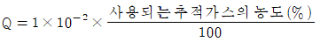
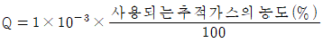
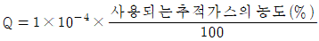
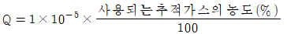

누설비파괴검사기사 (2018-09-15 기출문제)
1과목: 비파괴검사 개론
1. 비파괴검사의 결과를 전기 신호로 나타낼 수 없는 검사법은?
- 초음파탐상검사
- 누설자속탐상검사
- 와전류탐상검사
- 액체침투탐상검사
(정답률: 알수없음)

2. 침투탐상시험의 하전입자법(Electrified Particle Test)에 관한 내용으로 틀린 것은?
- 정전기 효과(Static Electricity)
- 마찰전기효과(Triboelectric Effect)
- 분말은 대전량이 적은 것일수록 양호
- 양전기로 하전된 CaCO3 분말을 자분으로 사용
(정답률: 10%)
3. 비파괴검사의 신뢰도를 높이는 요인이 아닌 것은?
- 기술자의 기량
- 검사기법의 적응성
- 결과의 평가기준
- 단일검사수법
(정답률: 알수없음)
4. 방사선과 시험체가 상호작용을 일으킬 때 그 정도에 영향을 미치는 인자가 아닌 것은?
- 시험체의 두께
- 방사선의 에너지
- 시험체의 원자번호
- 시험체의 표피효과
(정답률: 알수없음)
5. 와류탐상검사를 적용할 때 다음 중 시험코일의 감도가 가장 높은 것은?
- 외경 0.4cm 구리 전선과 내경 1cm 코일
- 외경 1cm 구리 봉과 내경 2cm 코일
- 외경 2cm 알루미늄 봉과 내경 3cm 코일
- 내경 4cm 구리 관과 외경 3cm 코일
(정답률: 알수없음)
6. 저온 풀림 경화시킨 스프링강재가 사용 중 시간의 경과에 따라 경도 등의 물성이 악화되는 현상은?
- 가공변화
- 경년변화
- 소성변화
- 자성변화
(정답률: 알수없음)
7. 쾌삭강에서 피삭성을 향상시키기 위해 첨가하는 것이 아닌 것은?
- Mn
- Pb
- S
- Se
(정답률: 34%)
8. 다음 중 강의 경화능을 알아보기 위한 시험법으로 가장 적절한 것은?
- 압축시험
- 조미니시험
- 크리프시험
- 설퍼프린트시험
(정답률: 알수없음)
9. 다음 경도시험 중 대면각이 136°인 다이아몬드 사각추 압입자를 사용하는 것은?
- 누프 경도시험
- 브리넬 경도시험
- 비커스 경도시험
- 로크웰 경도시험
(정답률: 46%)
10. 분말야금법을 이용한 제조법의 특징을 설명한 것 중 옳은 것은?
- 용융점이 높은 재료의 경우에도 용융하지 않고 제품을 제조할 수 있다.
- 제품의 크기에는 제한이 없고, 제품형상의 제한이 크다.
- 후가공으로 절삭가공이 필수적이다.
- 제품 내 기공이 존재한다.
(정답률: 알수없음)
11. Al-Si 합금인 실루민의 설명으로 옳지 않은 것은?
- 금속나트륨 등으로 개량처리를 한다.
- Al과 Si의 합금은 공정반응을 갖는다.
- 유동성이 좋기 때문에 얇고 복잡한 주물에 이용된다.
- 다이캐스팅 할 때는 용탕이 서냉되어 조대한 조직이 형성된다.
(정답률: 알수없음)
12. 마그네슘(Mg) 및 그 합금의 특징을 설명한 것 중 옳은 것은?
- Mg의 비중은 약 2.7이다.
- 비강도(강도/중량)가 낮다.
- 고온에서 매우 안정적이다.
- 감쇠능이 주철보다 커서 소음방지 재료로 사용 가능하다.
(정답률: 36%)
13. 냉간가공(cold working)에 대한 설명으로 옳은 것은?
- 전위밀도가 감소하여 강도가 약해진다.
- 냉간가공은 재결정온도 이상에서 가공한 것을 말한다.
- 냉간가공으로 생긴 잔류응력이 재료 내에 압축응력으로 작용하여 피로강도가 나빠진다.
- 항복점연신을 나타내는 강을 항복점 이상으로 냉간가공하게 되면 항복점연신이 없어진다.
(정답률: 알수없음)
14. 해드필드(Hadifield) 강에 대한 설명으로 옳지 않은 것은?
- 수인처리를 한다.
- 열전도성이 나쁘다.
- 가공경화성이 크다.
- 열변형을 일으키지 않는다.
(정답률: 10%)
15. 항동의 조직에 관한 설명 중 틀린 것은?
- 황동은 6개의 상을 가지고 있다.
- β상은 조밀육방격자를 갖는다.
- α상은 면심입방격자를 갖는다.
- α상은 구리에 아연을 고용한 상이다.
(정답률: 40%)
16. 용접의 시작이나 끝부분에 생기는 결함을 방지하기 위해 용접이음 부분에 붙여 용접하고 나중에 제거하는 것은?
- 엔드 탭
- 크레이터
- 비드 종단
- 스카핑
(정답률: 알수없음)
17. 용접 후 잔류응력을 제거하거나 완화시키는 방법이 아닌 것은?
- 피닝법
- 역변형법
- 노 내 풀림법
- 저온 응력 완화법
(정답률: 30%)
18. 모재의 두께가 6mm인 강판을 가스용접하려고 한다. 이 때 사용할 용접봉의 지름으로 가장 적당한 것은?
- 1mm
- 2mm
- 4mm
- 6mm
(정답률: 알수없음)
19. 다음 중 금속원자가 상온에서 원자 간의 인력에 의해 접합할 수 있는 거리로 옳으 ㄴ것은?
- 10-7cm
- 10-8cm
- 10-9cm
- 10-10cm
(정답률: 46%)
20. TIG 용접으로 판 두께 3mm의 알루미늄 판을 용접하려고 할 때 용접 전원으로 가장 적합한 것은?
- ACHF
- DCRP
- DCSP
- 전원이 필요없음
(정답률: 알수없음)
2과목: 누설검사 원리
21. 누설검사 원리에서 기체 방사성동위원소법의 특성 중 옳지 않은 것은?
- 10-6Paㆍm3/s보다 큰 누설률 측정에 유효하다.
- 가압 후 진공하는 순서로 시험한다.
- 세척 후 측정 시까지 시간이 길어지면 측정이 어렵다.
- 대부분의 기체 방사성동위원소는 인체에 해롭다.
(정답률: 알수없음)
22. 보일-샤를의 법칙에서 체적은 절대압력과 어떠한 관계가 있는가?
- 비례한다.
- 반비례한다.
- 압력의 제곱에 비례한다.
- 압력의 제곱에 반비례한다.
(정답률: 알수없음)
23. 가압법으로 기포누설시험을 할 때의 설명 중 틀린 것은?
- 압축공기에 섞여있는 오염물질은 미세누설을 막을 염려가 있다.
- 발포액의 적용은 기체가압 전에 적용해야 한다.
- 만약 개구부가 막혀 누설이 발생할 수 없다면 보다 높은 압력차이를 발생시킨다.
- 시험압력에서 시험체가 손상되지 않도록 응력에 대한 분석이 수행되어야 한다.
(정답률: 알수없음)
24. 어떤 용기의 용접부에 대하여 압력 변화량 누설시험을 하려고 한다. 본 시험 이전에 예비시험법으로 적합하지 아니한 것은?
- 육안 시험
- 수압 시험
- 할로겐 스니퍼 시험
- 헬륨 스니퍼 시험
(정답률: 알수없음)
25. 누설률을 측정하는 단위 중 SI 단위는?
- stdㆍcm3
- atmㆍcm3/s
- Paㆍm3/s
- stdㆍL/day
(정답률: 알수없음)
26. 음향누설검사에 영향을 주는 인자가 아닌 것은?
- 검출기 감도
- 음향 감쇠
- 시험체의 두께
- 누설의 크기
(정답률: 알수없음)
27. 이상기체의 정의 중 틀린 것은?
- 샤를의 법칙을 따른다.
- 아보가드로의 법칙을 따른다.
- 기체의 분자간 인력과 부피가 무시된다.
- 분자의 충동은 완전 비탄성체로 이루어진다.
(정답률: 47%)
28. 헬륨질량분석기 누설시험방법 중 모양이 복잡하여 시험개소를 피복할 수 없는 경우의 누설위치를 검사하는데 사용되는 방법은?
- 추적프로브법
- 진공후드법
- 검출프로브법
- 진공적분법
(정답률: 알수없음)
29. 진공에 대한 기체의 압력으로 분위기 압력에 대해서 독립적인 압력은?
- 게이지압
- 절대압
- 분압
- 증기압
(정답률: 알수없음)
30. 가압법에 의한 기포누설검사를 하고자 할 때 특별히 규정하는 바가 없는 경우, 가해야 할 압력은?
- 최소 50kPa(7.5psi) 이상의 게이지 압력
- 최소 100kPa(15psi) 이상의 게이지 압력
- 최소 150kPa(22.5psi) 이상의 게이지 압력
- 최소 200kPa(30psi) 이상의 게이지 압력
(정답률: 55%)
31. 누설검사원리에서 누설검사로 검출이 가능한 결함은?
- 라미네이션
- 내부기공
- 미세 수축공
- 관통 균열
(정답률: 알수없음)
32. 누설검사 방법을 선택할 때 고려해야 할 요인으로 옳지 않은 것은?
- 시스템과 추적액체의 물리적특성
- 예상누설의 크기
- 검사를 실시하는 이유
- 검사원의 자격유무
(정답률: 알수없음)
33. 가스크로마토 그래피법(색충 분석법)의 측정방법과 검지 가스를 짝지은 것이다. 틀린 것은?
- 비측용법-C2H8
- 비색법-CO
- 측시법-CH2
- 측장법-Ni(CO)4
(정답률: 50%)
34. 압력변화측정 시험법으로 대규모 용기의 누설률을 시험하던 중 갑작스러운 이슬점 온도의 심한 변화가 있었다. 원인으로 가장 적합한 해석은?
- 이슬점 센서의 고장
- 시스템 내부에 과다한 누출률이 존재
- 시스템 내부에서 갑자기 물의 누수 현상이 발생
- 시스템 내부의 습기 양이 측정 수준 아래로 감소
(정답률: 37%)
35. 800m3의 용기에 300kPa의 게이지압력으로 가압했다. 헬륨추적가스의 농도가 단위체적당 4%가 요구될 때 필요한 헬륨의 양은 몇 m3인가? (단, 대기압은 100kPa이다.)
- 32
- 80
- 96
- 128
(정답률: 47%)
36. 헬륨질량분석시험에서 질량분석기의 검지전극목적에 해당하는 것은?
- 시료 내의 추적가스량을 측정한다.
- 시료 내의 총 가스량을 분석한다.
- 추적가스 이온을 펌프한다.
- 시스템 내의 내압을 측정한다.
(정답률: 알수없음)
37. 할로겐누설시험에 사용되는 추적가스의 종류가 아닌 것은?
- 염소
- 불소
- 수소
- 브롬
(정답률: 알수없음)
38. 누설시험 시 사용하는 기체가 부피 12cm3인 용기 속에 들어 있다. 25℃에서 기체 압력이 760torr였다면 이 용기 속에 들어있는 이상기체의 양(mol)은? (단, 이 기체는 이상기체이며 기체상수(R)는 62.37torrㆍcm3K-1ㆍmol-1이다.)
- 0.49mol
- 49mol
- 5.85mol
- 0.58mol
(정답률: 알수없음)
39. 할라이드 토치법의 특성이 아닌 것은?
- 기포누설시험만큼 빠른 탐상이 가능하다.
- 대부분의 냉매가스는 연소성이다.
- 낮은 가격, 휴대성이 용이하다.
- 큰 누설 근처에 있는 작은 누설의 검출이 어렵다.
(정답률: 알수없음)
40. 압력변화 시험에서 흐름률 측정법의 특성이 아닌 것은?
- 대형 시험품에 적용이 쉽다.
- 누설량 측정과 누설위치 측정에 사용한다.
- 소형 밀봉 시험품의 총 누설량을 측정하는데 사용하기도 한다.
- 대형 밀봉 시험품의 총 누설량을 측정하는데 사용하기도 한다.
(정답률: 55%)
3과목: 누설검사 시험
41. 일반적으로 누설검사법에서 감도를 증가시키는 방법을 설명한 것이다. 틀린 것은?
- 진공상자법에서는 내부압력과 대기압과의 차이를 크게 한다.
- 헬륨질량분석법에서는 주사거리를 가능한 시험 표면과 급접시킨다.
- 압력변화시험에서는 가압 기체의 습도를 가능한 낮게 한다.
- 헬륨질량분석법에서 누설신호의 관찰시간을 증가시키기 위해 응답시간을 길게 한다.
(정답률: 알수없음)
42. 기포누설검사에서 감도를 증가시키는 방법으로 틀린 것은?
- 시험체를 냉각시킨다.
- 관찰조건을 개선시킨다.
- 관찰시간을 증가시킨다.
- 누설을 통과하는 기체의 양을 증가시킨다.
(정답률: 알수없음)
43. 헬륨질량분석기 누설검사에서 최소 검출누설률을 결정하는 인자로 틀린 것은?
- 헬륨농도
- 시험체의 밀도
- 절대압력
- 시험체적
(정답률: 알수없음)
44. 압력경계부위에서 총 누설률을 결정하기 위하여 필요한 요인이 아닌 것은?
- 시험품의 두께
- 누설의 기하학적 형상
- 누설되는 유체의 특성
- 유체의 압력 온도, 결함의 종류
(정답률: 알수없음)
45. 누설검사에 사용되는 가스가 아닌 것은?
- 공기
- 할로겐
- 헬륨
- 산소
(정답률: 알수없음)
46. Na-24를 이용하는 누설시험에서 누설여부를 결정하기 위해 필요한 것은?
- 감마선 검출기
- 진공게이지
- 압력게이지
- 음향센서
(정답률: 알수없음)
47. 기포누설시험 가압법에서 시험체를 가압할 때 사용하지 않는 가스는?
- 질소
- 수소
- 헬륨
- 이산화탄소
(정답률: 알수없음)
48. 전자포획법에 의한 할로겐 누설검사에서 배경가스로 사용할 수 없던 기체는?
- 질소
- 산소
- 헬륨
- 아르곤
(정답률: 알수없음)
49. 헬륨누설시험 중 후드법에서 용적이 1000m3인 시험체에 배기속도가 10000ℓ/s인 펌프를 연결하였다면 응답시간은?
- 1초
- 10초
- 100초
- 1000초
(정답률: 알수없음)
50. 가장 많이 사용되는 할로겐 추적(tracer) 가스 중의 하나로 공기 냉방장치에 이용되는 무색의 비연소성 가스는?
- He
- CCl2F2
- N2
- C2H2O
(정답률: 알수없음)
51. 주위 대기의 온도가 올라갈 때 할로겐 다이오드 검출기 용기에 담긴 추적자 가스의 압력은 어떻게 변화되는가?
- 내려간다.
- 올라간다.
- 변함없다.
- 온도 제곱에 비례한다.
(정답률: 알수없음)
52. 가열 양극 할로겐 검출기에서 양이온 방출의 특성을 설명한 것 중 틀린 것은?
- 양이온 방출은 방출 표면으로부터의 재질 손실을 의미한다.
- 백금과 세라믹 재질은 약간의 산화와 증발손실이 있으면 가열상태에서 이용할 수 없다.
- 이온방출 비는 온도, 면적, 표면의 형태, 순도 등에 의존한다.
- 안정된 이온의 방출은 할라이드 기체가 전극 표면에 접촉될 때 크게 증가한다.
(정답률: 알수없음)
53. 차압식 유량계가 아닌 것은?
- 오리피스 미터
- 벤츄리 미터
- 피토우관
- 로우터 미터
(정답률: 40%)
54. 기포누설검사의 특징으로 옳은 것은?
- 숙련된 시험자에 의해서만 시험이 가능하다.
- 누설 크기를 정확하게 결정할 수 없다.
- 어떤 액체를 사용하더라도 같은 시험 결과를 얻는다.
- 시험체가 큰 경우에만 적용할 수 있다.
(정답률: 73%)
55. 누설위치를 찾는 방법이 아닌 것은?
- 기포누설시험법
- 암모니아검지 테이프법
- 압력변화시험
- 침투탐상제 누설법
(정답률: 알수없음)
56. 기체 방사성동위원소(Kr-85)로 누설검사를 할 때 가압 후 계측시간은?
- 1분 이내
- 30분 이내
- 1시간 이내
- 2시간 이내
(정답률: 알수없음)
57. 누설검사 후 정확한 누설위치를 검출하기에 효과적인 비파괴검사방법은?
- 침투탐상검사
- 초음파탐상검사
- 와전류탐상검사
- 홀로그래피(holography)
(정답률: 알수없음)
58. 10% 헬륨 추적가스를 이용하여 가압하였다. 게이지압력이 200kPa 이었다면 이 때 헬륨 분압은 얼마인가? (단, 대기압은 100kPa이다.)
- 10kPa
- 20kPa
- 30kPa
- 40kPa
(정답률: 67%)
59. 시험용액의 소포성을 증가시켜 기포성장을 관찰하기 어렵게 하는 허위지시를 만드는 원인은?
- 시험품의 과진공
- 시험용액의 낮은 표면장력
- 시험용액의 낮은 점도
- 시험 표면의 그리이스, 용접슬래그 등의 오염물질
(정답률: 24%)
60. 진공상자법에서 최소 진공 압력 유지시간은?
- 10초
- 20초
- 30초
- 40초
(정답률: 알수없음)
4과목: 누설검사 규격
61. 보일러 및 압력용기에 대한 누설검사(ASME Sec.V, Art.10)에 따른 기포누설검사-직접 가압법에 규정된 시험체의 표면온도 범위는?
- 5℃~40℃
- 5℃~50℃
- 10℃~40℃
- 10℃~50℃
(정답률: 알수없음)
62. 용접식 강재 석유 저장 탱크의 구조(KS B 6225)에 따라 석유 저장 탱크의 밑판, 애뉼러 플레이트의 용접부를 진공에서 누설을 시험할 때, 압력은 대기압보다 최소한 얼마 낮은 값으로 하는가?
- 53.3kPa
- 63.3kPa
- 73.3kPa
- 83.3kPa
(정답률: 알수없음)
63. 질량 분석계를 이용한 압력 및 진공 용기 누출 시험 방법(KS B 5648)에 따른 진공법에서 시험용기를 비닐이나 후드 등으로 씌우고 여기에 헬륨을 불어 넣어 측정하는 방법은?
- 덮개법
- 적분법
- 분사법
- 헬륨 누출 검지법
(정답률: 알수없음)
64. 질량 분석계를 이용한 압력 및 진공 용기 누출 시험 방법(KS B 5648)에서 누출률에 대한 정의는?
- 모든 시스템에 걸쳐서 측정되는 모든 누출값의 합
- 누출을 정량적으로 파악하기 위해서 도입한 양
- 진공으로 단위 시간에 새어 들어가는 기체의 양
- 단위 시간당 기체의 유량
(정답률: 알수없음)
65. 질량 분석계를 이용한 압력 및 진공 용기 누출 시험 방법(KS B 5648)에서 누출 틈 찾기를 위한 시험조건으로 틀린 것은?
- 99% 이상의 순도를 가진 헬륨 기체가 필요하다.
- 시험 분위기의 온도는 15±3℃ 이어야 한다.
- 시험 분위기의 압력은 100kPa±5% 이다.
- 직류 헬륨 누출검지기의 시험 용기 진공도는 최소 10-2Pa이다.
(정답률: 65%)
66. 보일러 및 압력용기에 대한 누설검사(ASME Sec.V, Art.10)에 따른 할로겐 다이오드 검출기 프로브검사법에 규정된 시험 전의 시험 압력 유지 시간은?
- 최소 5분
- 최소 10분
- 최소 20분
- 최소 30분
(정답률: 알수없음)
67. 보일러 및 압력용기에 대한 누설검사(ASME Sec.V, Art.10)에 따른 헬륨 질량분석기 검사-후드법의 절차서 요건 중 필수변수에 포함되지 않는 것은?
- 표면처리 기법
- 시험 후 세척 기법
- 장치 제조자 및 모델
- 후드 내 추적가스의 최소농도 설정 기법
(정답률: 알수없음)
68. 보일러 및 압력용기에 대한 누설검사(ASME Sec.V, Art.10)에서 시험을 수행하기 전 시험 압력에 대한 최소 유지시간(soak time)이 30분이 아닌 검사법은?
- 할로겐 다이오드 검출기 프로브검사법
- 헬륨 질량분석기 검사-검출기 프로브법
- 기포누설검사-직접가압법
- 열전도 검출기 프로브검사법
(정답률: 67%)
69. 보일러 및 압력용기에 대한 누설검사(ASME Sec.V, Art.10)에 따른 헬륨 질량분석기 검사-검출기 프로브법에서, 시스템을 교정하기 위한 주사 시 프로브 팁(tip)과 누설표준의 구멍과의 유지 거리는?
- 3mm 이내
- 5mm 이내
- 10mm 이내
- 15mm 이내
(정답률: 알수없음)
70. 보일러 및 압력용기에 대한 누설검사(ASME Sec.V, Art.10)에서 다이얼 지시형 및 기록형 진공압력계가 아닌 경우, 게이지 눈금판의 범위는?
- 최대압력의 1.0배 이상 2.0배 이하
- 최대압력의 2.0배 이상 5.0배 이하
- 최대압력의 1.0배 이상 4.0배 이하
- 최대압력의 1.5배 이상 4.0배 이하
(정답률: 77%)
71. 보일러 및 압력용기에 대한 누설검사(ASME Sec.V, Art.10)에 따른 기포누설검사-진공상자법에서 규정된 부분진공(partial vacuum) 유지시간은?
- 적어도 5초
- 적어도 10초
- 적어도 20초
- 적어도 30초
(정답률: 60%)
72. 보일러 및 압력용기에 대한 누설검사(ASME Sec.V, Art.10)에 따른 할로겐 다이오드 검출기 프로브검사법에서, 사용되는 누설표준에 대한 최대누설률[Paㆍm3/s]Q의 계산식은?




(정답률: 알수없음)
73. 보일러 및 압력용기에 대한 누설검사(ASME Sec.V, Art.10)에 따라 헬륨 질량분석기검사-추적자 프로브법으로 검사하는 경우 교정 누설 표준으로 옳은 것은?
- 최대 헬륨 누설률이 1×10-6Paㆍm3/s인 모세관형 누설 표준
- 최대 헬륨 누설률이 1×10-5Paㆍm3/s인 모세관형 누설 표준
- 최대 헬륨 누설률이 1×10-4Paㆍm3/s인 모세관형 누설 표준
- 최대 헬륨 누설률이 1×10-3Paㆍm3/s인 모세관형 누설 표준
(정답률: 19%)
74. 보일러 및 압력용기에 대한 누설검사(ASME Sec.V, Art.10)에 따른 헬륨 질량분석기검사-추적자 프로브법에 규정된 보조장비에 해당되지 않는 것은?
- 변압기(transformer)
- 보조펌프시스템(auxiliary pump system)
- 검출기 프로브(detector probe)
- 진공게이지(vacuum gagre)
(정답률: 40%)
75. 보일러 및 압력용기에 대한 누설검사(ASME Sec.V, Art.10)에 따라 헬륨 질량분석기검사-후드법을 적용하여 검사한 경우, 별도의 규정이 없다면 측정된 누설률의 합격 기준은?
- 1×10-9 Paㆍm3/s 이하
- 1×10-8 Paㆍm3/s 이하
- 1×10-7 Paㆍm3/s 이하
- 1×10-6 Paㆍm3/s 이하
(정답률: 알수없음)
76. 질량 분석계를 이용한 압력 및 진공 용기누출 시험 방법(KS B 5648)에 규정된 진공법에 해당하지 않는 검사법은?
- 헬륨 분사법
- 흡입 탐침법
- 덮개법
- 적분법
(정답률: 알수없음)
77. 보일러 및 압력용기에 대한 누설검사(ASME Sec.V, Art.10)에 따라 설계 압력이 200kPa 인 시험체를 압력 누설검사하고자 할 때, 적용 가능한 최대 시험압력은?
- 250kPa
- 275kPa
- 300kPa
- 400kPa
(정답률: 알수없음)
78. 보일러 및 압력용기에 대한 누설검사(ASME Sec.V, Art.10)에 따른 열전도 검출기 프로브검사법에서 시험 중 검출기의 감도를 확인하는 주기는?
- 8시간을 초과하지 않는 주기
- 4시간을 초과하지 않는 주기
- 2시간을 초과하지 않는 주기
- 1시간을 초과하지 않는 주기
(정답률: 알수없음)
79. 질량 분석계를 이용한 압력 및 진공 용기 누출 시험 방법(KS B 5648)에서 기체나 증기가 고체와 접촉할 때 표면과의 상호작용에 의해 기체분자가 표면에 달라붙는 현상을 무엇이라 하는가?
- 흡출
- 흡착
- 탈착
- 탈기체
(정답률: 알수없음)
80. 주철 보일러의 구조(KS B 6202)에 따라 온수 보일러를 수압시험하고자 할 때, 시험 압력은 최고 사용압력의 몇 배로 하는가?
- 1.25배
- 1.5배
- 2배
- 2.5배
(정답률: 알수없음)